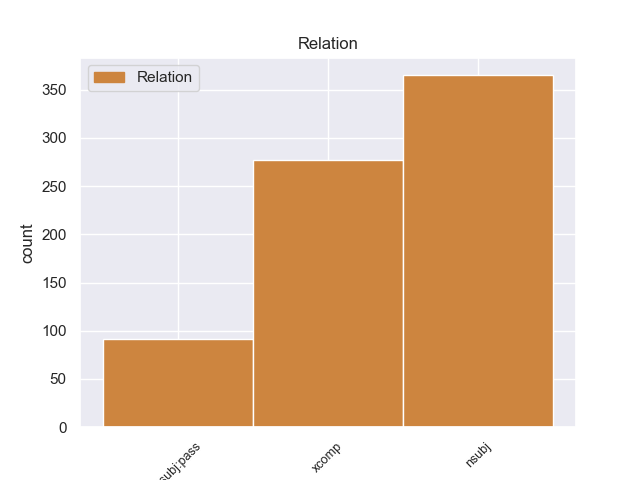
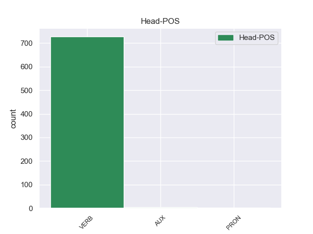
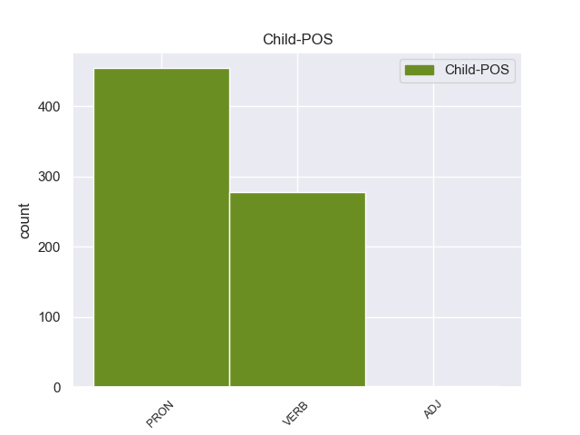

Distribution of features within this leaf



Agreement Rules sorted by frequency.
- When the dependent token is the nominal subject(nsubj) of the head token,
1 Ευελπιστώ _ _ _ _ 0 _ _ _
2 ότι _ _ _ _ 0 _ _ _
3 η _ _ _ _ 0 _ _ _
4 απόφαση _ _ _ _ 0 _ _ _
5 αυτή _ _ _ _ 0 _ _ _
6 , _ _ _ _ 0 _ _ _
7 συμπεριλαμβανομένης _ _ _ _ 0 _ _ _
8 και _ _ _ _ 0 _ _ _
9 της _ _ _ _ 0 _ _ _
10 αιτιολογικής _ _ _ _ 0 _ _ _
11 έκθεσης _ _ _ _ 0 _ _ _
12 που που PRON _ Case=Acc|Gender=Fem|Number=Sing|Person=3|PronType=Rel 14 nsubj _ _
13 την _ _ _ _ 0 _ _ _
14 συνοδεύει συνοδεύω VERB _ Aspect=Imp|Mood=Ind|Number=Sing|Person=3|Tense=Pres|VerbForm=Fin|Voice=Act 0 _ _ _
15 , _ _ _ _ 0 _ _ _
16 θα _ _ _ _ 0 _ _ _
17 διαβιβαστεί _ _ _ _ 0 _ _ _
18 σ _ _ _ _ 0 _ _ _
19 τις _ _ _ _ 0 _ _ _
20 γαλλικές _ _ _ _ 0 _ _ _
21 αρχές _ _ _ _ 0 _ _ _
22 , _ _ _ _ 0 _ _ _
23 εφόσον _ _ _ _ 0 _ _ _
24 υπερψηφιστεί _ _ _ _ 0 _ _ _
25 από _ _ _ _ 0 _ _ _
26 το _ _ _ _ 0 _ _ _
27 Κοινοβούλιο _ _ _ _ 0 _ _ _
28 . _ _ _ _ 0 _ _ _
1 Τόσο _ _ _ _ 0 _ _ _
2 το _ _ _ _ 0 _ _ _
3 ζήτημα _ _ _ _ 0 _ _ _
4 της _ _ _ _ 0 _ _ _
5 ασυλίας _ _ _ _ 0 _ _ _
6 όσο _ _ _ _ 0 _ _ _
7 και _ _ _ _ 0 _ _ _
8 η _ _ _ _ 0 _ _ _
9 αίτηση _ _ _ _ 0 _ _ _
10 για _ _ _ _ 0 _ _ _
11 άρση _ _ _ _ 0 _ _ _
12 της _ _ _ _ 0 _ _ _
13 έχουν _ _ _ _ 0 _ _ _
14 σχέση _ _ _ _ 0 _ _ _
15 μόνο _ _ _ _ 0 _ _ _
16 με _ _ _ _ 0 _ _ _
17 το _ _ _ _ 0 _ _ _
18 εάν _ _ _ _ 0 _ _ _
19 το _ _ _ _ 0 _ _ _
20 Δικαστήριο _ _ _ _ 0 _ _ _
21 μπορεί μπορώ VERB _ Aspect=Imp|Mood=Ind|Number=Sing|Person=3|Tense=Pres|VerbForm=Fin|Voice=Act 0 _ _ _
22 να _ _ _ _ 0 _ _ _
23 εκδώσει εκδώ VERB _ Aspect=Perf|Mood=Ind|Number=Sing|Person=3|VerbForm=Fin|Voice=Act 21 xcomp _ _
24 δεσμευτικά _ _ _ _ 0 _ _ _
25 βουλεύματα _ _ _ _ 0 _ _ _
26 για _ _ _ _ 0 _ _ _
27 τον _ _ _ _ 0 _ _ _
28 περιορισμό _ _ _ _ 0 _ _ _
29 της _ _ _ _ 0 _ _ _
30 ελεύθερης _ _ _ _ 0 _ _ _
31 μετακίνησης _ _ _ _ 0 _ _ _
32 των _ _ _ _ 0 _ _ _
33 βουλευτών _ _ _ _ 0 _ _ _
34 του _ _ _ _ 0 _ _ _
35 Ευρωπαϊκού _ _ _ _ 0 _ _ _
36 Κοινοβουλίου _ _ _ _ 0 _ _ _
37 ή _ _ _ _ 0 _ _ _
38 την _ _ _ _ 0 _ _ _
39 ελευθερία _ _ _ _ 0 _ _ _
40 τους _ _ _ _ 0 _ _ _
41 να _ _ _ _ 0 _ _ _
42 έρχονται _ _ _ _ 0 _ _ _
43 σε _ _ _ _ 0 _ _ _
44 επικοινωνία _ _ _ _ 0 _ _ _
45 με _ _ _ _ 0 _ _ _
46 άλλα _ _ _ _ 0 _ _ _
47 πρόσωπα _ _ _ _ 0 _ _ _
48 . _ _ _ _ 0 _ _ _
1 Οι _ _ _ _ 0 _ _ _
2 αρχές _ _ _ _ 0 _ _ _
3 των _ _ _ _ 0 _ _ _
4 πόλεων _ _ _ _ 0 _ _ _
5 εξέφρασαν _ _ _ _ 0 _ _ _
6 αυτή _ _ _ _ 0 _ _ _
7 την _ _ _ _ 0 _ _ _
8 επιθυμία _ _ _ _ 0 _ _ _
9 σε _ _ _ _ 0 _ _ _
10 συνέδριο _ _ _ _ 0 _ _ _
11 που που PRON _ Case=Nom|Gender=Neut|Number=Sing|Person=3|PronType=Rel 12 nsubj:pass _ _
12 διεξήχθη διεάγω VERB _ Aspect=Perf|Mood=Ind|Number=Sing|Person=3|Tense=Past|VerbForm=Fin|Voice=Pass 0 _ _ _
13 σ _ _ _ _ 0 _ _ _
14 τη _ _ _ _ 0 _ _ _
15 Βεγγάζη _ _ _ _ 0 _ _ _
16 . _ _ _ _ 0 _ _ _
Disagree Examples:
1 Σ _ _ _ _ 0 _ _ _
2 τις _ _ _ _ 0 _ _ _
3 συνομιλίες _ _ _ _ 0 _ _ _
4 που _ _ _ _ 0 _ _ _
5 είχα _ _ _ _ 0 _ _ _
6 σ _ _ _ _ 0 _ _ _
7 την _ _ _ _ 0 _ _ _
8 Αγκυρα _ _ _ _ 0 _ _ _
9 την _ _ _ _ 0 _ _ _
10 περασμένη _ _ _ _ 0 _ _ _
11 εβδομάδα _ _ _ _ 0 _ _ _
12 ενεθάρρυνα ενθαρρύνω VERB VERB Aspect=Imp|Mood=Ind|Number=Plur|Person=1|Tense=Past|VerbForm=Fin|Voice=Act 0 _ _ _
13 με _ _ _ _ 0 _ _ _
14 έμφαση _ _ _ _ 0 _ _ _
15 την _ _ _ _ 0 _ _ _
16 τουρκική _ _ _ _ 0 _ _ _
17 κυβέρνηση _ _ _ _ 0 _ _ _
18 να _ _ _ _ 0 _ _ _
19 συνεχίσει συνεχίζω VERB VERB Aspect=Perf|Mood=Ind|Number=Sing|Person=3|VerbForm=Fin|Voice=Act 12 xcomp _ _
20 με _ _ _ _ 0 _ _ _
21 αποφασιστικότητα _ _ _ _ 0 _ _ _
22 την _ _ _ _ 0 _ _ _
23 πορεία _ _ _ _ 0 _ _ _
24 των _ _ _ _ 0 _ _ _
25 πολιτικών _ _ _ _ 0 _ _ _
26 και _ _ _ _ 0 _ _ _
27 οικονομικών _ _ _ _ 0 _ _ _
28 μεταρρυθμίσεών _ _ _ _ 0 _ _ _
29 της _ _ _ _ 0 _ _ _
30 . _ _ _ _ 0 _ _ _
1 Για _ _ _ _ 0 _ _ _
2 τον _ _ _ _ 0 _ _ _
3 λόγο _ _ _ _ 0 _ _ _
4 αυτό _ _ _ _ 0 _ _ _
5 δράττομαι _ _ _ _ 0 _ _ _
6 της _ _ _ _ 0 _ _ _
7 ευκαιρίας _ _ _ _ 0 _ _ _
8 να _ _ _ _ 0 _ _ _
9 ενθαρρύνω ενθαρρύνω VERB VERB Aspect=Imp|Mood=Ind|Number=Sing|Person=1|Tense=Pres|VerbForm=Fin|Voice=Act 0 _ _ _
10 εκ _ _ _ _ 0 _ _ _
11 νέου _ _ _ _ 0 _ _ _
12 την _ _ _ _ 0 _ _ _
13 Τουρκία _ _ _ _ 0 _ _ _
14 να _ _ _ _ 0 _ _ _
15 ενισχύσει ενισχύω VERB VERB Aspect=Perf|Mood=Ind|Number=Sing|Person=3|VerbForm=Fin|Voice=Act 9 xcomp _ _
16 τα _ _ _ _ 0 _ _ _
17 δημοκρατικά _ _ _ _ 0 _ _ _
18 δικαιώματα _ _ _ _ 0 _ _ _
19 σ _ _ _ _ 0 _ _ _
20 τη _ _ _ _ 0 _ _ _
21 χώρα _ _ _ _ 0 _ _ _
22 καθώς _ _ _ _ 0 _ _ _
23 και _ _ _ _ 0 _ _ _
24 να _ _ _ _ 0 _ _ _
25 δρομολογήσει _ _ _ _ 0 _ _ _
26 και _ _ _ _ 0 _ _ _
27 να _ _ _ _ 0 _ _ _
28 ολοκληρώσει _ _ _ _ 0 _ _ _
29 τις _ _ _ _ 0 _ _ _
30 σχετικές _ _ _ _ 0 _ _ _
31 νομοθετικές _ _ _ _ 0 _ _ _
32 πρωτοβουλίες _ _ _ _ 0 _ _ _
33 . _ _ _ _ 0 _ _ _
1 Υποθέτω _ _ _ _ 0 _ _ _
2 ότι _ _ _ _ 0 _ _ _
3 πρόκειται _ _ _ _ 0 _ _ _
4 για _ _ _ _ 0 _ _ _
5 παράλειψη _ _ _ _ 0 _ _ _
6 , _ _ _ _ 0 _ _ _
7 θα _ _ _ _ 0 _ _ _
8 ήθελα _ _ _ _ 0 _ _ _
9 ωστόσο _ _ _ _ 0 _ _ _
10 να _ _ _ _ 0 _ _ _
11 επιστήσω _ _ _ _ 0 _ _ _
12 την _ _ _ _ 0 _ _ _
13 προσοχή _ _ _ _ 0 _ _ _
14 σας _ _ _ _ 0 _ _ _
15 σε _ _ _ _ 0 _ _ _
16 αυτή _ _ _ _ 0 _ _ _
17 και _ _ _ _ 0 _ _ _
18 να _ _ _ _ 0 _ _ _
19 καλέσω καλώ VERB VERB Aspect=Perf|Mood=Ind|Number=Sing|Person=1|VerbForm=Fin|Voice=Act 0 _ _ _
20 όλους _ _ _ _ 0 _ _ _
21 να _ _ _ _ 0 _ _ _
22 υπερψηφίσετε υπερψηφίζω VERB VERB Aspect=Perf|Mood=Ind|Number=Plur|Person=2|VerbForm=Fin|Voice=Act 19 xcomp _ _
23 την _ _ _ _ 0 _ _ _
24 τροπολογία _ _ _ _ 0 _ _ _
25 140 _ _ _ _ 0 _ _ _
26 για _ _ _ _ 0 _ _ _
27 την _ _ _ _ 0 _ _ _
28 έκθεση _ _ _ _ 0 _ _ _
29 σχετικά _ _ _ _ 0 _ _ _
30 με _ _ _ _ 0 _ _ _
31 τις _ _ _ _ 0 _ _ _
32 δημόσιες _ _ _ _ 0 _ _ _
33 προμήθειες _ _ _ _ 0 _ _ _
34 αγαθών _ _ _ _ 0 _ _ _
35 και _ _ _ _ 0 _ _ _
36 υπηρεσιών _ _ _ _ 0 _ _ _
37 και _ _ _ _ 0 _ _ _
38 την _ _ _ _ 0 _ _ _
39 ανάθεση _ _ _ _ 0 _ _ _
40 κατασκευαστικών _ _ _ _ 0 _ _ _
41 συμβάσεων _ _ _ _ 0 _ _ _
42 . _ _ _ _ 0 _ _ _
1 Αξιότιμε _ _ _ _ 0 _ _ _
2 κύριε _ _ _ _ 0 _ _ _
3 Πρόεδρε _ _ _ _ 0 _ _ _
4 , _ _ _ _ 0 _ _ _
5 κυρία _ _ _ _ 0 _ _ _
6 Επίτροπε _ _ _ _ 0 _ _ _
7 , _ _ _ _ 0 _ _ _
8 αξιότιμοι _ _ _ _ 0 _ _ _
9 συνάδελφοι _ _ _ _ 0 _ _ _
10 , _ _ _ _ 0 _ _ _
11 η _ _ _ _ 0 _ _ _
12 ελευθέρωση _ _ _ _ 0 _ _ _
13 των _ _ _ _ 0 _ _ _
14 οδικών _ _ _ _ 0 _ _ _
15 μεταφορών _ _ _ _ 0 _ _ _
16 αναμφίβολα _ _ _ _ 0 _ _ _
17 οδήγησε οδηγώ VERB VERB Aspect=Perf|Mood=Ind|Number=Sing|Person=3|Tense=Past|VerbForm=Fin|Voice=Act 0 _ _ _
18 σ _ _ _ _ 0 _ _ _
19 το _ _ _ _ 0 _ _ _
20 να _ _ _ _ 0 _ _ _
21 έχουμε έχω VERB VERB Aspect=Imp|Mood=Ind|Number=Plur|Person=1|Tense=Pres|VerbForm=Fin|Voice=Act 17 xcomp _ _
22 σ _ _ _ _ 0 _ _ _
23 την _ _ _ _ 0 _ _ _
24 Ευρώπη _ _ _ _ 0 _ _ _
25 καλύτερη _ _ _ _ 0 _ _ _
26 προσφορά _ _ _ _ 0 _ _ _
27 και _ _ _ _ 0 _ _ _
28 καλύτερες _ _ _ _ 0 _ _ _
29 τιμές _ _ _ _ 0 _ _ _
30 . _ _ _ _ 0 _ _ _
1 Εμείς _ _ _ _ 0 _ _ _
2 βρισκόμαστε _ _ _ _ 0 _ _ _
3 σ _ _ _ _ 0 _ _ _
4 το _ _ _ _ 0 _ _ _
5 πλευρό _ _ _ _ 0 _ _ _
6 σας _ _ _ _ 0 _ _ _
7 και _ _ _ _ 0 _ _ _
8 σας _ _ _ _ 0 _ _ _
9 ενθαρρύνουμε ενθαρρύνω VERB VERB Aspect=Imp|Mood=Ind|Number=Plur|Person=1|Tense=Pres|VerbForm=Fin|Voice=Act 0 _ _ _
10 να _ _ _ _ 0 _ _ _
11 επιβάλετε επιβάλλω VERB VERB Aspect=Imp|Mood=Ind|Number=Plur|Person=2|Tense=Pres|VerbForm=Fin|Voice=Act 9 xcomp _ _
12 με _ _ _ _ 0 _ _ _
13 ζήλο _ _ _ _ 0 _ _ _
14 και _ _ _ _ 0 _ _ _
15 συνέπεια _ _ _ _ 0 _ _ _
16 σ _ _ _ _ 0 _ _ _
17 τα _ _ _ _ 0 _ _ _
18 δυόμισι _ _ _ _ 0 _ _ _
19 χρόνια _ _ _ _ 0 _ _ _
20 της _ _ _ _ 0 _ _ _
21 προεδρίας _ _ _ _ 0 _ _ _
22 σας _ _ _ _ 0 _ _ _
23 όσα _ _ _ _ 0 _ _ _
24 είπατε _ _ _ _ 0 _ _ _
25 σήμερα _ _ _ _ 0 _ _ _
26 . _ _ _ _ 0 _ _ _